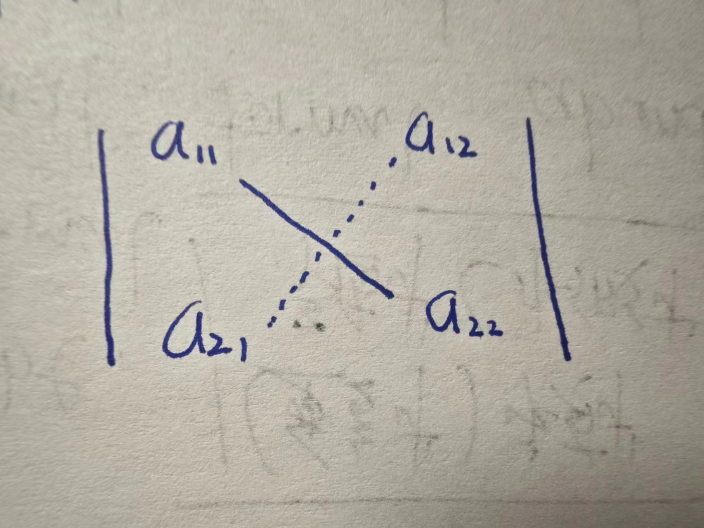
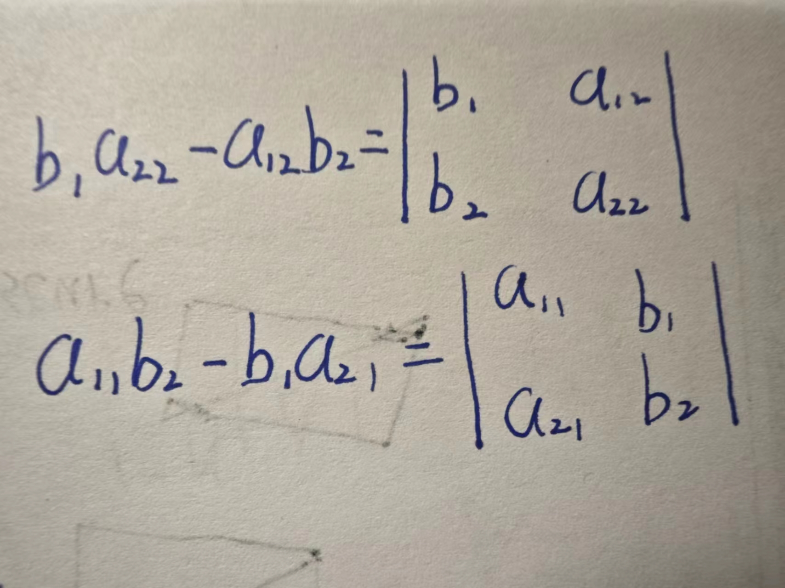
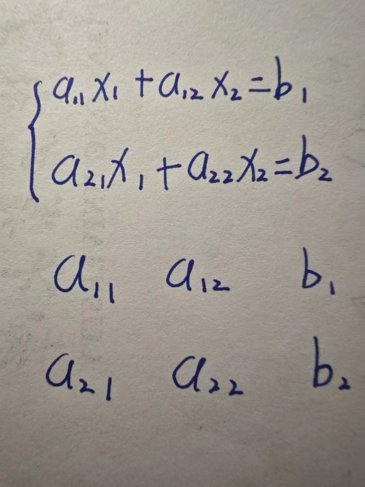
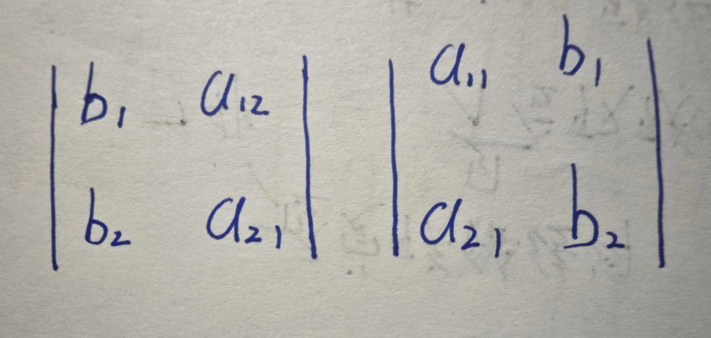
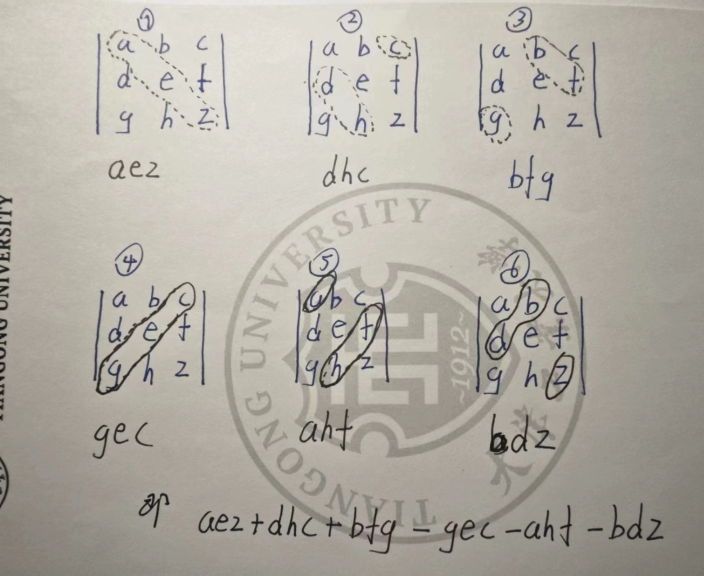
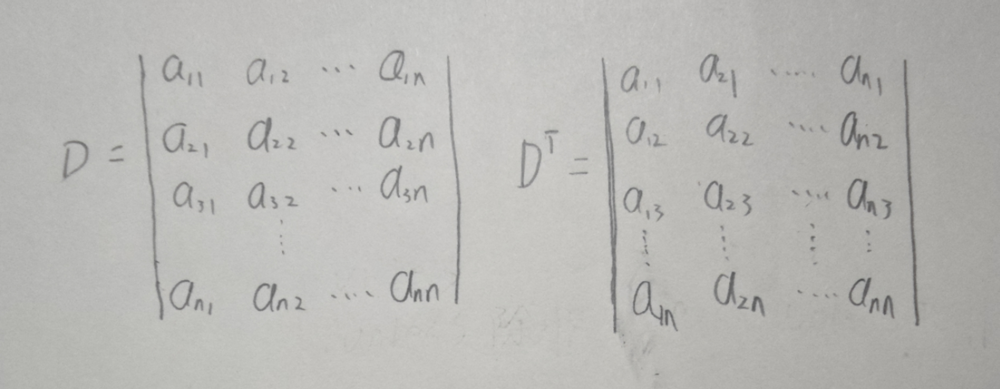
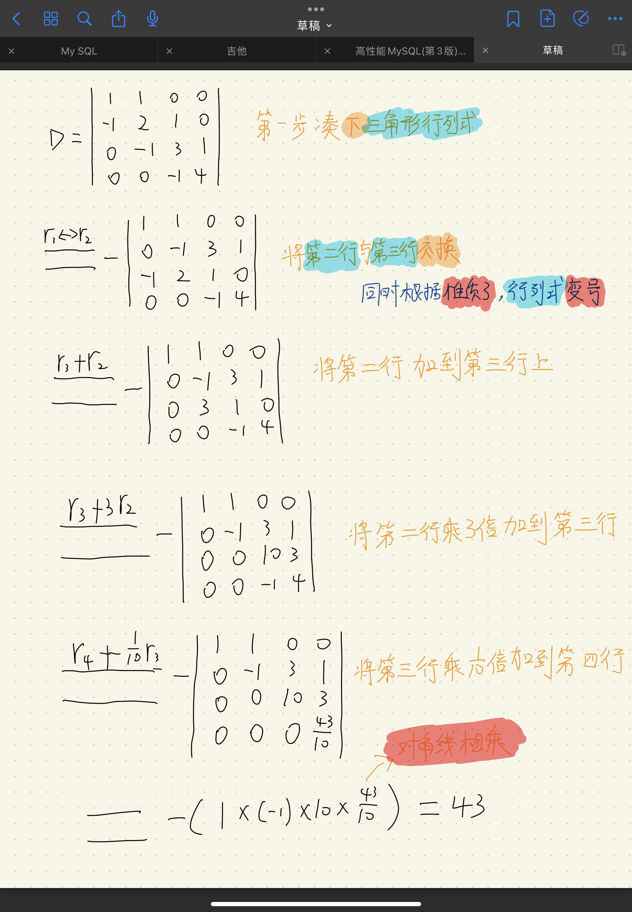

行列式
二阶与三阶行列式
上面这个就是个三阶行列式，别问为什么是三阶，因为有三行三列
以下是一个二元线性方程组（为什么是二元，单纯就是两个未知数x和y）（为什么是线性，单纯就是未知数的次幂是一次，在xoy坐标轴画出来是一条直线）为啥,,,这样取下标啊，这人是不是有毛病，跟Oracle为jdk版本取名有的一比啊（行吧，知道你看不懂这个笑话）
仔细看，是说第一行第一个未知数的系数所以就是11，就是第二行的第二个未知数的系数，其他的类比
行了，我们随便选择一个未知数消去，当一个方程只有一个未知数时便很好求出未知数的值
这样吧，知道你很2，我们就消去,第一步就是用和分别乘上①和②方程的两端
这个时候，上下方程的前的系数一样就可以上下相减,于是乎：
当然，也可以是：
同理得出：
这样一来，轻轻松松拿捏的解：
注意看方程的分子和分母都是四个数两两相乘再相减，其中分母是有四个未知数的系数确定，把四个系数，按在方程组中的位置放置（反正这段话我是看晕了，我最头疼的就是这种，我说太阳好晒，你来给我讲太阳主要由氢组成，氢占质量的70%以上。 在太阳内部高温 (在1000万k以上)、高压 (约为2500亿大气压力)的条件下，氢原子会发生“热核反应”........）
上面就是个单纯的数表，伟大的数学家们在它的两旁加上竖线就成了行列式
上面这个就是二阶行列式,数就是行列式的元素或元，i是行标，j是列标，表示元素位于第i行第j列，位于第i行第j列的元素称为行列式的(i,j)元
-----------------------------------------------------------------------------
图中的实线是主对角线,虚线是副对角线
因此我们的分母也就是主对角线之积减去副对角线之积
-----------------------------------------------------------------------------
你讲这么多分母，那分子呢？分子又臭又长，毫无规律，怎么来的啊？
我滴妈，分子怎么就等于这个行列式了啊，你是不是随便凑的啊？
-----------------------------------------------------------------------------
其实不是，细看下面
把方程组的系数，以及常数项提出来，就会发现左边两列是行列式
右边一列就是常数项(你这不是废话？)
-----------------------------------------------------------------------------
别急，我们分别用常数列替换行列式的第一列与第二列
这不就是分子的行列式了？嘿嘿
-----------------------------------------------------------------------------
目前为止只需要知道，怎么计算行列式就可以了（对角线法则）
对角线法则也就是凑对角线，并且将主对角线冠正号，副对角冠负号以后相加
-----------------------------------------------------------------------------
把n个不同的元素排成一列，称为这n个元素的全排列
= 1,2,3
即有
1 2 3 自然数从小到大为标准次序
2 3 1 而2 3 1 这种1在3后面即为一个逆序，且1在2后面又是一个逆序(23是按顺序来的),即231存在2个逆序
3 1 2 3存在0个逆序，1存在1个逆序，2存在1个逆序，即312存在0+1+1=2个逆序
1 3 2 1存在0个逆序，3存在0个逆序，2存在1个逆序，即132存在0+0+1=1个逆序
2 1 3 2存在0个逆序，1存在1个逆序，3存在0个逆序，即213存在0+1+0=1个逆序
3 2 1 3存在0个逆序，2存在1个逆序，1存在2个逆序，即321存在0+1+2=3个逆序
逆序数奇数的排列叫做奇排列
逆序数为偶数的排列叫做偶排列
对换
定理一：一个排列中的任意两个元素对换，排列改变奇偶性
推论：
奇排列对换成标准排列的对换次数为奇数
偶排列对换成标准排列的对换次数为偶数
还记得这个行列式吧
行列式的值很容易得：
毕竟就是对角线法则嘛，可是为什么副对角线的值要冠负号呢？细看，主与副下标的第一个数，都是123开头的行标，后面是列标（没有规律）
主：123，231，312 副：132，213，321
也就是123的逆序数为0（偶排列），231逆序数为2（偶排列），312的逆序数为2（偶排列）
也就是132的逆序数为1（奇排列），213逆序数为1（奇排列），321的逆序数为3（奇排列）
D=
以上是n阶行列式，以下是上（下）三角形行列式
主对角线以下（上）的元素都为0的行列式叫做上（下）三角形行列式
特别的，当除主对角线外的元素都为0的行列式叫做对角行列式
三角形行列式的值就是主对角线的乘积
如果一个n阶行列式中等于0的元素比还多，则此行列式值为0
性质一：行列式与它的转置行列式相等
称为行列式D的转置行列式(行变列，列变行)

性质二：对换行列式的两行(列)，行列式变号
交换第i行(列)和第j行(列),记作(列： )
=-196
=196
推导出：如果行列式有两行(列)完全相同，则此行列式为零(行列式本质是个值)
证：两行相同，交换两行行列式什么都不变，得到D=-D，移项得2D=0，得出D=0，证毕。
性质三：行列式的某一行(列)中所有的元素都乘以同一个倍数k，等于用数k乘以此行列式
第i行(列)乘以k，记作
k
=
性质四：行列式中如果有两行(列)元素成比例，则此行列式为零
我觉得与性质2相铺相成
性质五：若行列式的某一行(列)的元素都是两数之和
D =
...
...
...
=
...
...
...
+
...
...
...
拆成两个其他项不变，单拆其一列(行)
性质六：把行列式的某一行(列)的个元素乘以同一个倍数，然后加到另一行(列)对应的元素上去，行列式不变
以数k乘j行(列)加到第i行(列)上，记
敲黑板！后面的加到前面去，儿子在后面，爸爸在前面（我是乱说的，我不会举例🫤）
例如下面这个行列式：
以下是我的看法与解决过程

我刚开始学的时候总觉得像玩魔方，真的。（可我不会啊！😭）
在n阶行列式中，把（i，j）元所在的第i行和第j列划去后，留下的n-1阶行列式叫做（i，j）元的余子式,记作
↑代数余子式 ↑余子式
例如下面的这个行列式
D=
在D中（3，2）元 的余子式和代数余子式分别为：
余子式（去掉第三行以及第二列） 代数余子式
你如果不蠢，就看出来了，代数余子式就是余子式加了个代数罢了，也就是个符号问题
引理：
举个例子
D=
在行列式所示，在n阶行列式中，第3行除（3，3）元
这是第三个笔记的内容。